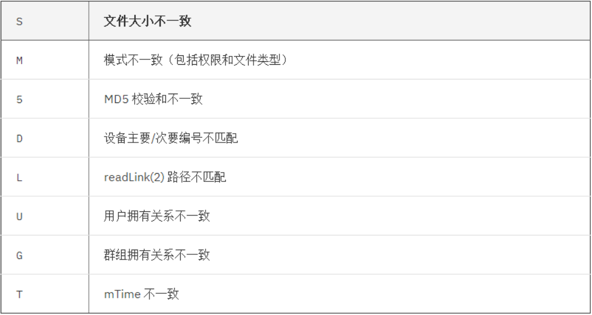

一、软件包基础
软件运行环境：
程序员代码–>预处理–>编译–>汇编–>链接
静态编译：.a
动态编译：.so
包管理器：
二进制应用程序的组成部分
二进制文件、库文件、配置文件、帮助文件
包命名：
源代码：name-VERSION.tar.gz|bz2|xz
包之间：可能存在依赖性关系，甚至循环依赖
解决依赖包管理工具：
yum：rpm包管理器的前端工具
apt-get：deb包管理器前端工具
zypper：suse上的rpm前端管理工具
dnf：Fedora 18+ rpm包管理器前端管理工具
程序包管理器：
debian：deb文件，dpkg包管理器
redhat：rpm文件，rpm包管理器
rpm：Redhat Package Manager
RPM Package Manager
二、RPM包管理
RPM代表Redhat Packge Manager（Redhat包管理器）
RPM现在已成为管理Redhat和UnitedLinux以及其他许多发行版本上的软件的标准。
RPM本质上就是一个包，包含可以立即在特定机器体系结构上安装和运行的Linux
软件。最初加载到发行版本中的所有软件都是通过一个RPM来安装的。
RPM剖析：
RPM是文件包，它包括关于包及其功能和依赖关系（即在该包能够运行之前必须安装
其他哪些包）的信息。还包含包中的文件清单，指定这些文件必须加载到系统中的何
处，以及它们的初始权限如何。RPM还包含安装前脚本，这是由包开发人员编写的。
RPM其次还包含已编译的二进制文件。最后，RPM包含了安装后的脚本。
RPM数据库：
/var/lib/rpm
包含了关于系统上已安装的每个RPM信息。这个数据库知道包之间的依赖关系，还知道每个包的
文档和配置文件的位置。在加载和卸载包时，RPM使用这个数据库来检查依赖关系。用户还可以
在这个数据库查询关于包的信息。
rpm
常用选项：
1 | -i 安装包 |
安装：
rpm{-i|–install}[install-option]PACKAGE_FILE
1 | -h 输出哈希（#）符号提供安装进度更新 |
[install-option]
1 | –test 测试安装，但不真正执行安装 |
升级：
1 | rpm{-U|–upgrade}[install-option]PACKAGE_FILE |
upfrade 如果安装有旧版程序包，则升级
如果不存在旧版程序包，则安装
freshen 如果安装有旧版程序包，则升级
如果不存在旧版程序包，则不执行升级操作
1 | rpm -Uvh PACKAGE_FILE… |
注：内核升级不建议使用以上两种升级命令，建议使用-ivh重新安装另一个内核，Linux支持多内核版本共存。
1 | –oldpackage 降级 |
查询：
1 | rpm{-q|–query}[select-options][query-options] |
注：包的名称必须精确匹配，不允许使用通配符。然而，如果记不住包的完整名称，您可以
使用 grep 工具来帮助找到它。可以使用 -qa 开关来查询所有已安装的包，并用 grep 来管道
输出您能记住的信息。例如：rpm -qa | grep name
[select-option]
1 | -a 查看所有已安装的包 |
[query-options]
1 | –changelog 查询rpm包的changelog |
rpm2cpio 包文件|cpio -itv 预览包内文件
rpm2cpio 包文件|cpio -id “*.conf”释放包内文件
包校验：
1 | rpm{-V|–verify}[select-options][verify-options]PACKAGE_FILE |

注：只能查看已安装的包
导入所需要公钥
1 | rpm -K|checksig rpmfile 检查包的完整性和签名 |
三、YUM使用介绍
Yellowdog Update Modifier，rpm的前端程序，可解决软件包相关依赖性，可在
多个库之间定位软件包，up2date的替代工具。
使用yum安装文件包出错一般都是下面2种情况：
- 配置文件的格式错误
- 缓存问题
注：yum不支持多个终端同时执行
yum repository: yum repo，存储了众多rpm包，以及包的相关的元数据文件（放置于特定目录repodata下）
文件服务器：
http://
https://
ftp://
file://
仓库位置：
/etc/yum.repos.d/*.repo
仓库默认设置：
/etc/yum.conf
repo关键行
1 | [base] 仓库名，不可以加空格 |
yum日志：
/var/log/yum.log 包含了使用yum安装与卸载的日志
yum的repo配置文件中可用的变量：
$releasever: 当前OS的发行版的主版本号
$basearch：基础平台；i386, x86_64
例如：
1 | http://server/centos/$releasever/$basearch/ |
yum
格式：yum[option][command][package…]PACKAGE_FILE
显示仓库列表：
1 | yum repolist[all|enabled|disabled] |
显示程序包：
1 | yum list |
安装程序包：
1 | yum install package1 [package2][…] |
升级程序包：
1 | yum update [package1][package2] […]（升级） |
检查可用升级：
1 | yum check-update |
卸载程序包：
1 | yum remove | erase package1 [package2][…] |
查看程序包information：
1 | yum info […] |
查看指定的特性(可以是某文件)是由哪个程序包所提供：
1 | yum provides | whatprovides feature1 [feature2][…] |
清理本地缓存：
1 | 清除/var/cache/yum/$basearch/$releasever缓存 |
构建缓存：
1 |
搜索：
1 | yum search string1 [string2][…] |
以指定的关键字搜索程序包名及summary信息
查看指定包所依赖的capabilities：
1 | yum deplist package1 [package2][…] |
查看yum执行历史：
1 | yum history [info|list|packages-list|packages-info| |
日志：/var/log/yum.log
安装及升级本地程序包：
1 | yum install rpmfile1 [rpmfile2][…] |
包组管理的相关命令：
1 | yum groupinstall group1 [group2][…] |
四、源代码安装
C、C++：make项目管理器
configure脚本–>Makefile.in–>Makefile
C语言源代码编译安装三步骤：
1、./configure
–prefix= 指定目录安装
–sysconfidir= 指定/etc目录独立安装
- 通过选项传递参数，指定启用特性，安装路径；执行会参考用户的指定已经Makefile.in文件生成Makefile
- 检查依赖到的外部环境，如依赖的软件包
2、make
编译过程，根据Makefile文件，构建应用程序
3、make install
复制文件到相应路径